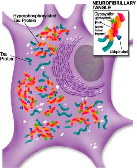
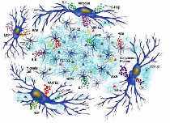
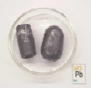
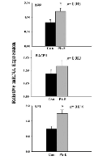
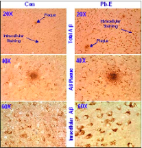

| METALS IN MEDICINE AND THE ENVIRONMENT | |||
| Metals | Alzheimers and Lead | ||
|
Alzheimer’s Disease and Pathology The basic premise of the Alzheimer’s disease is that it is a neurodegenerative disease of the central nervous system associated with progressive memory loss resulting in dementia. The more common form of the disease has a late onset in the mid-60’s-70’s. There is also an early onset or familial form of the disease which can be observed in the mid-40’s-50’s. The pathology of a brain exhibiting the disease shows two distinct characteristics that result in major neuronal loss. These include extracellular plaques and intracellular tangles found in the hippocampus, cerebral cortex, and other areas that are crucial for cognitive functioning. Plaques are formed mostly from the deposition of beta amyloid, which is a peptide derived from the sectioning of the amyloid precursor protein. Tangles are formed from paired helical filaments composed of neurofilament and hyperphosphorylated tau protein. The pathologies of early versus late-onset AD are virtually the same.   The Link There have been numerous studies exploring the link between oxidative stress caused by heavy metals that find their way into the brain and the development of Alzheimer’s disease-like pathologies and/or dementia late in life. A study completed in 2007 showed a relation between high exposure to environmental lead during early neuronal development and the expression/regulation of the amyloid precursor protein.  In this study, primates were exposed to high levels of lead during infancy via their infant formula until the levels of lead in their blood exceed the CDC’s healthy standard. These primates were then observed through out life and at 23 years of age the expression of AD-related mRNAs of APP, BACE1, beta amyloid, and Sp1 were compared to those of primates that had not been exposed. The mRNA levels of APP, BACE1, and Sp1 were all elevated compared to the controls. Also, immunohistochemical analysis of the frontal association cortex was performed. Specifically, APP expression and beta amyloid levels were observed in higher amounts in the Pb exposed animals compared to those of the controls. Staining revealed an increase of total beta amyloid as well as extracellular plaques. A final area that was studied was at the molecular level of the DNA expression. The primates that were exposed to environmental lead showed a latent expression of APP, BACE1, and Sp1. Because of this latent expression, the methylation pathway of these genes was investigated. Specifically the activity of DNA methyltransferase 1 (DNMT1) in the 23-year-old primates was studied. It was found that the activity of DNMT1 was reduced by 20% in the animals exposed to Pb. Methylation is a biological process by which a methyl group is attached to DNA to reduce expression.  Conclusions The research team that undertook this project concluded that infantile exposure to environmental Pb interferes with gene imprinting and this could lead to permanent molecular damage on the DNA. A potential mechanism for how the lead interferes with the gene expression for the AD genes is not yet known, but it is hypothesized that genes regulated by methylation can be reprogrammed in adulthood as a result of infantile exposure to Pb. References Wu, J. et. Al. Alzheimer’s Disease (AD)-Like Pathology in Aged Monkeys after Infantile Exposure to Environmental Metal Lead (Pb): Evidence for a Developmental Origin and Environmental Link for AD. The Journal of Neuroscience. 28. 3-9. Image Sources Alzheimer’s Disease Mini Review
|
|||
| Topics | |||
|
|||
{kind=link}
{kind=link}
{kind=link}